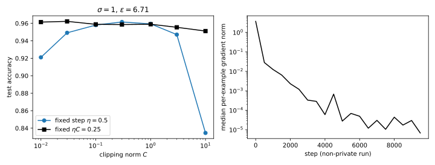
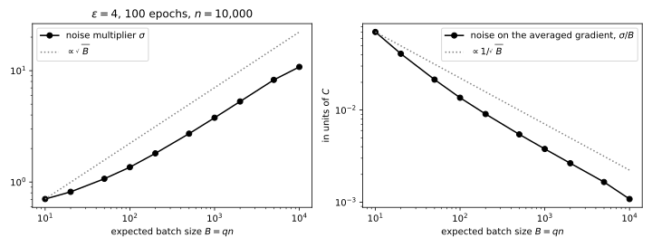

37 DP-SGD
37.1 Why this matters
Private empirical risk minimization ended with one method left standing for non-convex models: gradient descent with Gaussian noise on every step. Its privacy proof needs only that one record moves each step’s gradient by a bounded amount, and clipping each record’s gradient supplies that bound for any model. Two more changes make it practical for differential privacy (DP). Each step uses a random minibatch instead of the full dataset, which makes steps cheap and, by amplification, more private. And an accountant composes thousands of such steps into one \((\varepsilon, \delta)\). The result is stochastic gradient descent (SGD) with per-example clipping and Gaussian noise, DP-SGD, introduced by Abadi et al. (2016). Nearly every private deep-learning system runs it, through libraries such as Opacus, TensorFlow Privacy and JAX Privacy.
Part 4 computed the privacy of DP-SGD without running it: Amplification by subsampling and Choosing an accountant report \(\varepsilon = 6.71\) at \(\delta = 10^{-5}\) for sampling rate \(q = 0.01\), noise multiplier \(\sigma = 1\) and 10,000 steps. This chapter runs that configuration on a neural network, and asks what the noise and the clipping cost and how to choose the knobs that control them.
37.1.1 The one idea: the analysis never looks inside the model
Each step of DP-SGD releases a noisy sum of clipped per-example gradients. Clipping rescales each record’s gradient to length at most \(C\), so adding or removing one record changes the sum by at most \(C\), whatever the network, the loss or the current weights. The privacy proof stops there. Everything else, the architecture, the data, whether training converges, affects only accuracy.
That split organizes the chapter. The knobs divide into two groups. The noise multiplier \(\sigma\), the sampling rate \(q\) and the number of steps \(T\) determine \(\varepsilon\) through the accountant, and nothing else does. The clipping norm \(C\) and the step size \(\eta\) do not change \(\varepsilon\) at all; they change how much of the gradient survives clipping and how much the noise moves the weights. The cost of privacy comes in two forms: a bias from clipping, which changes the direction of the average gradient, and a variance from the noise, which makes each step partly random.
Table 37.1 lists the results and where each is used.
| Result | Where it is used |
|---|---|
| The algorithm and its \((\varepsilon, \delta)\) guarantee | Every chapter of this part; what to check in an implementation |
| Clipping: the expected update, scale invariance and the choice of \(C\) | Tuning DP-SGD; disparate impact |
| Batch size at a fixed budget | Choosing \(q\) and \(T\); large-batch private training |
| Per-example gradient norms without per-example gradients | Implementing DP-SGD at scale; public data and fine-tuning |
| Privacy against accuracy on the running example | The baseline every later chapter improves on |
Notation. A training set \(D\) has \(n\) records \(z_i = (x_i, y_i)\). The model has \(p\) weights \(w\), and \(g_i = \nabla_w\ell(w, z_i)\) is the gradient of record \(i\)’s loss, its per-example gradient. \(C\) is the clipping norm, \(\sigma\) the noise multiplier (the noise standard deviation in units of \(C\)), \(q\) the sampling rate, \(B = qn\) the expected batch size, \(T\) the number of steps and \(\eta\) the step size. Neighbouring datasets now differ by adding or removing one record, \(D' = D \cup \{x\}\), because Poisson sampling pairs with that relation (Amplification by subsampling); the previous chapter used replacement.
The running example. Inputs are 50-dimensional standard normal vectors, and labels are the sign of the output of a fixed random teacher network with 8 hidden tanh units, so a perfect classifier exists. The student is a network with one hidden layer of 64 tanh units and a logistic loss, \(p = 3{,}329\) weights including biases, trained on \(n = 10{,}000\) records and tested on 20,000 more. DP-SGD runs with \(q = 0.01\) (expected batch \(B = 100\)), \(C = 0.5\), \(\eta = 0.5\), \(\sigma = 1\) and \(T = 10{,}000\) steps, 100 epochs: exactly Part 4’s running example. The dataset is fixed; only the training randomness changes between runs.
How to read this chapter. Read the toolkit and Section 37.3, which states what the guarantee covers and what it assumes. Section 37.4 and Section 37.5 say how to set the knobs. Section 37.6 is about implementation and can be skipped on a first reading. Section 37.7 puts the pieces together.
37.2 Toolkit: four facts every derivation uses
37.2.1 Fact 1 — A Gaussian mechanism is described by one ratio
Add noise \(\mathcal N(0, s^2I)\) to a vector-valued function whose value moves by at most \(\Delta\) in Euclidean length between neighbours. Its privacy depends only on \(\mu = \Delta/s\), the shift measured in noise standard deviations, because rotating the space puts the shift on one axis and leaves identical noise on the others (The Laplace and Gaussian mechanisms). For a clipped sum with noise \(\sigma C\), \(\Delta = C\) and \(\mu = 1/\sigma\): the clipping norm cancels.
37.2.2 Fact 2 — The Poisson-subsampled Gaussian and its accountant
If each record enters the batch independently with probability \(q\), one step’s output with the record is a mixture: with probability \(1 - q\) the record was not drawn and the output is the same as without it, with probability \(q\) it was drawn and the output is shifted. In the worst case the two distributions to compare are the mixture \((1 - q)\mathcal N(0, \sigma^2) + q\mathcal N(1, \sigma^2)\) and \(\mathcal N(0, \sigma^2)\), in one dimension. Its Rényi differential privacy (RDP) curve, the Rényi divergence of order \(\alpha\) between them, has for integer \(\alpha\) the exact form \[\varepsilon_{q,\sigma}(\alpha) = \frac{1}{\alpha - 1}\ln\sum_{j=0}^\alpha\binom\alpha j(1 - q)^{\alpha - j}q^je^{(j^2 - j)/(2\sigma^2)}, \tag{37.1}\] and a numerical integral for other orders (Amplification by subsampling). RDP curves add under composition, even when each step depends on the previous outputs (Rényi DP), and the composed curve converts to \((\varepsilon, \delta)\) at the best order, \[\varepsilon = \min_\alpha\Big[T\varepsilon_{q,\sigma}(\alpha) + \ln\frac{\alpha - 1}\alpha - \frac{\ln\delta + \ln\alpha}{\alpha - 1}\Big] \tag{37.2}\] (Balle et al. 2020; From Rényi DP to (ε, δ)). For small \(q\) and orders that are not too large, only the \(j = 2\) term of Equation 37.1 matters beyond the first two, and the curve is close to \(\frac\alpha2q^2(e^{1/\sigma^2} - 1)\).
37.2.3 Fact 3 — Post-processing
Any computation on a private output, which does not touch the data again, is as private as the output itself (Post-processing, group privacy and composition). Dividing a noisy sum by a public constant, taking a gradient step with it, and releasing the resulting weights are all post-processing.
37.2.4 Fact 4 — A dense layer’s gradient is an outer product
For a dense layer that maps an input \(a \in \mathbb R^{p_{\text{in}}}\) to \(Wa\), the gradient of a loss with respect to \(W\) is \(\delta a^\top\), where \(\delta\) is the gradient with respect to the layer’s output, the back-propagated error. Each entry is \(\partial\ell/\partial W_{jk} = \delta_ja_k\), because \(W_{jk}\) multiplies \(a_k\) and contributes to output \(j\) only. Gradient inversion uses the same fact to reconstruct inputs from gradients; here it makes per-example gradient norms cheap.
37.3 The algorithm and its guarantee
37.3.1 Context
What exactly does DP-SGD compute, and which \((\varepsilon, \delta)\) does it satisfy? The answer has to be precise, because each detail of the algorithm is an assumption of the proof, and implementations that change a detail can lose the guarantee without any visible symptom.
37.3.2 Statement
Start from weights \(w_0\) chosen independently of the data. For \(t = 0, \dots, T - 1\):
- Sample. Put each record in the batch \(S_t\) independently with probability \(q\).
- Per-example gradients. For each \(i \in S_t\), compute \(g_i = \nabla_w\ell(w_t, z_i)\).
- Clip. Rescale each to length at most \(C\): \(\bar g_i = g_i\min(1, C/\|g_i\|)\).
- Noisy sum. \(G_t = \sum_{i\in S_t}\bar g_i + \xi_t\) with \(\xi_t \sim \mathcal N(0, \sigma^2C^2I)\).
- Step. \(w_{t+1} = w_t - \eta\,G_t/B\), with \(B = qn\) the expected batch size.
Releasing all of \(w_1, \dots, w_T\) is \((\varepsilon, \delta)\)-DP for add/remove neighbours, with \(\varepsilon\) given by Equation 37.2. The guarantee does not depend on the loss, the model, \(C\) or \(\eta\).
37.3.3 Derivation
- One record moves the clipped sum by at most \(C\). Fix the weights \(w_t\) and the batch of the other records. If the record \(x\) is in the batch, the sum contains one extra term \(\bar g_x\), of length at most \(C\); every other term is the same for \(D\) and \(D'\), because each is computed from its own record alone.
- One step is a subsampled Gaussian mechanism. With noise \(\sigma C\), Fact 1 gives the ratio \(1/\sigma\) for a step on which \(x\) is drawn. Under Poisson sampling, \(x\) is drawn with probability \(q\) independently of the other records, so the step’s output on \(D'\) is the mixture of Fact 2. Rescaling by \(C\) and rotating, the worst case over the direction and length of \(\bar g_x\) is the one-dimensional pair of Fact 2, a shift of exactly \(C\) along one axis; a shorter shift is the same pair with extra noise, which cannot be less private.
- Dividing by \(B\) is post-processing. \(B = qn\) is a fixed public number, so \(w_{t+1}\) is computed from \(w_t\) and \(G_t\) alone (Fact 3).
- Compose. Step \(t\) is evaluated at \(w_t\), which depends on the earlier noisy sums. RDP composition holds for such adaptive sequences, so the \(T\) steps together have RDP curve \(T\varepsilon_{q,\sigma}(\alpha)\).
- Convert. Equation 37.2 turns the composed curve into \((\varepsilon, \delta)\). Every iterate is a function of the released noisy sums, so releasing all of them, or only the last, is covered.
37.3.4 Interpretation
What the proof assumes, and how implementations break it. Each step of the derivation is a condition on the code.
- Step 1 needs per-example independence. Batch normalization computes means and variances over the batch, so one record changes every other record’s activations and gradients, and the sum can move by much more than \(C\). Private models use normalizations that act on one example at a time, such as group or layer normalization.
- Step 1 needs a fixed \(C\). Choosing \(C\) as, say, the median gradient norm of the current batch makes the noise scale depend on the data. Choose \(C\) in advance, from public data or a private estimate.
- Step 2 needs Poisson sampling. Shuffling the data and cutting it into fixed batches is a different mechanism, which Amplification by subsampling shows can be much less private than the Poisson accountant reports.
- Step 3 needs a public denominator. Dividing by the actual batch size \(|S_t|\), which reveals how many records were drawn and changes when \(x\) is added, is not post-processing of \(G_t\). Divide by \(B\), or release a noisy count and spend budget on it.
- Step 4 needs the accountant to see every step, including the steps of runs that were discarded during tuning: that is the subject of Hyperparameter tuning.
What it does not cover. The guarantee is for one record. A person with many records needs user-level privacy. Preprocessing that uses the data, such as normalizing features by their mean, must itself be private or use public statistics.
37.3.5 Example: the running example
With \(q = 0.01\), \(\sigma = 1\), \(T = 10{,}000\) and \(\delta = 10^{-5}\), the accountant gives \(\varepsilon = 6.71\), attained at order \(\alpha = 4.1\), the same value Part 4 reports. Table 37.2 gives the noise multiplier that the same \(q\) and \(T\) need for other budgets.
| \(\varepsilon\) at \(\delta = 10^{-5}\) | 0.5 | 1 | 2 | 4 | 6.71 | 8 |
|---|---|---|---|---|---|---|
| Noise multiplier \(\sigma\) | 7.72 | 4.13 | 2.28 | 1.36 | 1 | 0.917 |
How large is the noise? The averaged update \(G_t/B\) carries noise with standard deviation \(\sigma C/B = 1 \times 0.5/100 = 0.005\) on each of the 3,329 coordinates. A Gaussian vector with \(p\) independent coordinates of standard deviation \(s\) has length close to \(s\sqrt p\), so the noise has length about \(0.005 \times \sqrt{3{,}329} = 0.288\). The averaged clipped gradient has length at most \(C = 0.5\), and in the run it is 0.070 at the first step and between 0.015 and 0.027 from step 1,000 on. The noise in every step is about ten times longer than the signal.
Training works anyway, because the signal points in roughly the same direction from one step to the next, while the noise is independent. Over \(k\) steps, the signals add up to about \(k\) times their length, and the noise to about \(\sqrt k\) times its length, since independent vectors add in squares. Signal overtakes noise when \(k \cdot 0.026 > \sqrt k \cdot 0.288\), that is after \(k > (0.288/0.026)^2 \approx 123\) steps. The final model reaches test accuracy 0.9589, against 0.9627 for non-private SGD.
37.3.6 Check yourself
- A colleague’s implementation divides each noisy sum by the number of records actually in the batch. Which step of the derivation fails? (Step 3: the divisor depends on the data, so the update is no longer a function of the noisy sum alone, and the accountant’s analysis does not apply to it.)
- Does changing \(C\) from 0.5 to 5 change \(\varepsilon\)? (No. The sum’s sensitivity and the noise both scale with \(C\), so their ratio \(1/\sigma\) and the accountant’s input are unchanged. It changes accuracy.)
37.4 Clipping: bias, noise and the choice of C
37.4.1 Context
The clipping norm does not affect privacy, but it controls both forms of cost. Small \(C\) clips more gradients, which biases the update; large \(C\) adds more noise, because the noise is \(\sigma C\). What does the update estimate, and how should \(C\) be chosen?
37.4.2 Statement
Averaged over the sampling and the noise, the update direction is a reweighted gradient: \[\mathbb E\Big[\frac{G_t}{B}\Big] = \frac1n\sum_{i=1}^n\min\Big(1, \frac{C}{\|g_i\|}\Big)g_i, \tag{37.3}\] the true average gradient \(\frac1n\sum_ig_i\) with each record weighted by \(\min(1, C/\|g_i\|)\). Its noise has standard deviation \(\sigma C/B\) per coordinate.
Scale invariance. If every per-example gradient in a run is clipped, that is \(\|g_i\| \ge C\) at every step, then the update is \[w_{t+1} = w_t - \frac{\eta C}{B}\Big(\sum_{i\in S_t}\frac{g_i}{\|g_i\|} + \sigma\zeta_t\Big), \qquad \zeta_t \sim \mathcal N(0, I), \tag{37.4}\] which depends on \(\eta\) and \(C\) only through their product \(\eta C\).
37.4.3 Derivation
- Average over the sampling. Each record is in the batch with probability \(q\), so \(\mathbb E\sum_{i\in S_t}\bar g_i = \sum_{i=1}^n q\,\bar g_i\). The noise has mean zero.
- Divide by \(B = qn\). The \(q\) cancels and leaves \(\frac1n\sum_i\bar g_i\), which is Equation 37.3 by the definition of \(\bar g_i\). This is why the denominator is the expected batch size: with it, the update is an unbiased estimate of the average clipped gradient.
- The noise. \(\xi_t/B\) has standard deviation \(\sigma C/B\) per coordinate.
- Scale invariance. If \(\|g_i\| \ge C\), then \(\bar g_i = Cg_i/\|g_i\|\). Write the noise as \(\sigma C\zeta_t\) with \(\zeta_t\) standard normal. Then \(G_t = C(\sum_ig_i/\|g_i\| + \sigma\zeta_t)\), and \(\eta G_t/B\) is Equation 37.4. Two runs with the same \(\eta C\), the same seed and every gradient clipped produce the same weights.
37.4.4 Interpretation
Below the gradient norms, only \(\eta C\) matters. When \(C\) is smaller than every per-example gradient, DP-SGD is normalized SGD, which averages unit vectors, plus noise, and its behaviour depends on the product \(\eta C\). Lowering \(C\) further changes nothing once \(\eta\) is scaled up to match. This is why practitioners often clip aggressively and tune only the step size; De et al. (2022) report that small clipping norms work well, which this explains.
Above them, noise grows and signal does not. Once \(C\) exceeds most gradient norms, the clipped average stops growing with \(C\), but the noise \(\sigma C/B\) keeps growing in proportion. The signal-to-noise ratio falls like \(1/C\). A large \(C\) is never better than the smallest \(C\) that clips almost nothing.
The bias reweights records, not uniformly. Equation 37.3 gives each record a weight that falls as its gradient grows. Records the model fits badly, such as rare examples, members of small groups or mislabelled points, have large gradients and are down-weighted, while well-fitted records keep their full weight. The update is not the gradient of the training loss but of a reweighted one, whose weights change as training proceeds. Disparate impact measures who pays for this.
Gradient norms change during training. In the DP-SGD run of the running example the median per-example gradient norm is 3.592 at the first step, 0.006 at step 1,000, and rounds to 0.000 from step 3,000 on; non-private training behaves the same way (Figure 37.1, right). The logistic loss flattens on records that are classified with a wide margin, so their gradients vanish. With \(C = 0.5\), every gradient is clipped at the start, and between 9% and 25% of the batch later: the few records still near the decision boundary. A fixed \(C\) is in the scale-invariant regime early and in the unbiased regime late.

37.4.5 Example: sweeping C
Table 37.3 trains the running example at \(\varepsilon = 6.71\) with seven clipping norms, once with the step size fixed at 0.5 and once with \(\eta C\) fixed at \(0.5 \times 0.5 = 0.25\).
| \(C\) | 0.01 | 0.03 | 0.1 | 0.3 | 1 | 3 | 10 |
|---|---|---|---|---|---|---|---|
| Fixed \(\eta = 0.5\) | 0.9244 | 0.9510 | 0.9567 | 0.9607 | 0.9583 | 0.9523 | 0.8347 |
| Fixed \(\eta C = 0.25\) | 0.9627 | 0.9623 | 0.9605 | 0.9599 | 0.9590 | 0.9558 | 0.9494 |
With the step size fixed, a small \(C\) is too slow (0.9244 at \(C = 0.01\): every step has length proportional to \(\eta C = 0.005\)) and a large one too noisy (0.8347 at \(C = 10\)). With \(\eta C\) fixed, accuracy is flat for \(C \le 0.3\), as scale invariance predicts, and falls slowly for large \(C\), where the noise grows while the clipped gradients do not. The best accuracy, 0.9627 at \(C = 0.01\), equals the non-private model’s.
37.4.6 Check yourself
- You double \(C\) and halve \(\eta\). When is the training run unchanged, and when not? (Unchanged in distribution if every gradient is clipped under both values of \(C\), by Equation 37.4. If some gradients are shorter than the new \(C\), they now keep more of their length relative to the others, and the update changes.)
- Why does dividing by \(B\) rather than \(|S_t|\) make the expected update unbiased for the clipped average? (Because \(\mathbb E\sum_{i\in S_t}\bar g_i = q\sum_i\bar g_i\), and dividing by \(qn\) gives exactly the average. Dividing by \(|S_t|\) is a ratio of random quantities, whose expectation is not the ratio of expectations.)
37.5 Batch size and the number of steps at a fixed budget
37.5.1 Context
Suppose the privacy budget \((\varepsilon, \delta)\) and the compute budget, a number of epochs \(E\), are fixed. Each epoch is \(1/q\) steps, so \(T = E/q\). Should you take many small steps or few large ones? The accountant answers how much noise each choice needs, and the noise per averaged gradient decides how useful each step is.
37.5.2 Statement
In the regime where the small-\(q\) approximation of Fact 2 holds, keeping \(\varepsilon\) fixed while changing \(q\) at a fixed number of epochs requires \[\sigma \propto \sqrt q, \qquad \text{so} \qquad \frac{\sigma C}{B} \propto \frac{C}{\sqrt{qn}\,\sqrt n} = \frac{C}{\sqrt{Bn}}: \tag{37.5}\] the noise on the averaged gradient falls like \(1/\sqrt B\). Outside that regime, at small \(\sigma\), small batches need even more noise than Equation 37.5 says, so large batches do better than \(1/\sqrt B\).
37.5.3 Derivation
- Per-step cost. By Fact 2, for small \(q\) the per-step RDP is about \(\frac\alpha2q^2(e^{1/\sigma^2} - 1)\), and for \(\sigma\) well above 1, \(e^{1/\sigma^2} - 1 \approx 1/\sigma^2\), so about \(\frac{\alpha q^2}{2\sigma^2}\).
- Total cost. \(T = E/q\) steps add up to \(\frac{E}q\cdot\frac{\alpha q^2}{2\sigma^2} = \frac{\alpha Eq}{2\sigma^2}\). The conversion of Equation 37.2 depends only on this curve, so \(\varepsilon\) stays fixed when \(q/\sigma^2\) does, that is \(\sigma \propto \sqrt q\).
- Noise per averaged gradient. \(\sigma C/B\) with \(B = qn\) and \(\sigma \propto \sqrt q\) is proportional to \(\sqrt q/q = 1/\sqrt q\), which is Equation 37.5.
- Small \(\sigma\). When \(\sigma\) is near or below 1, \(e^{1/\sigma^2} - 1\) is much larger than \(1/\sigma^2\): the per-step cost is higher than step 1 says, by the factor \(\sigma^2(e^{1/\sigma^2} - 1)\). Small batches are in this regime, because they need small \(\sigma\), so they pay this factor and need more noise than the \(\sqrt q\) law predicts.
37.5.4 Interpretation
Amplification is most efficient at large \(\sigma\). The ratio \(\sigma/\sqrt q\), which Equation 37.5 says is constant, falls from 22.3 at \(B = 10\) to 10.8 at \(B = 10{,}000\) in Table 37.4. The factor \(\sigma^2(e^{1/\sigma^2} - 1)\) explains most of it: 3.23 at \(\sigma = 0.704\), 1.33 at \(\sigma = 1.36\) and 1.04 at \(\sigma = 3.78\). Steps with little noise are expensive per unit of signal, because in the tail of the privacy loss, the high orders that the conversion uses, sampling buys little (Amplification by subsampling).
Large batches help, but not for free. For a fixed number of epochs, large batches give less noise per step and fewer steps. Fewer steps means less progress if the step size cannot grow in proportion, and the best step size grows with the batch: in Table 37.5 the best step size goes from 0.25 at \(B = 30\) to between 1 and 2 at \(B = 100\) to \(B = 1{,}000\). De et al. (2022) and Anil et al. (2022) train with batches of thousands to hundreds of thousands, and report that large batches are a main ingredient of accurate private models. Large batches also parallelize well, which matters more on accelerators than in this small example.

37.5.5 Example: one budget, seven batch sizes
Table 37.4 fixes \(\varepsilon = 4\), \(\delta = 10^{-5}\) and 100 epochs on \(n = 10{,}000\) records, and finds the noise multiplier for each sampling rate. For full batches, \(q = 1\), there is no sampling and the 100 Gaussian steps compose exactly, like a single Gaussian with ratio \(\sqrt{100}/\sigma\) (f-DP and Gaussian DP).
| \(q\) | \(B\) | Steps \(T\) | \(\sigma\) | Noise per averaged gradient \(\sigma/B\) | \(\sigma/\sqrt q\) | \(\sigma^2(e^{1/\sigma^2} - 1)\) |
|---|---|---|---|---|---|---|
| 0.001 | 10 | 100,000 | 0.704 | 0.0704 | 22.3 | 3.23 |
| 0.003 | 30 | 33,333 | 0.909 | 0.0303 | 16.6 | 1.95 |
| 0.01 | 100 | 10,000 | 1.36 | 0.0136 | 13.6 | 1.33 |
| 0.03 | 300 | 3,333 | 2.16 | 0.0072 | 12.5 | 1.12 |
| 0.1 | 1,000 | 1,000 | 3.78 | 0.00378 | 12 | 1.04 |
| 0.3 | 3,000 | 333 | 6.44 | 0.00215 | 11.8 | 1.01 |
| 1 | 10,000 | 100 | 10.8 | 0.00108 | 10.8 | 1 |
From \(B = 10\) to \(B = 1{,}000\), a hundredfold increase, the noise per averaged gradient falls from 0.0704 to 0.00378, a factor of 18.6, against the factor of 10 that \(1/\sqrt B\) predicts. Table 37.5 trains four of these configurations with three step sizes each.
| \(B\) | Step sizes and test accuracy |
|---|---|
| 30 | \(\eta = 0.25\): 0.9544; 0.5: 0.9487; 1: 0.9453 |
| 100 | \(\eta = 0.5\): 0.9522; 1: 0.9569; 2: 0.9465 |
| 300 | \(\eta = 1\): 0.9591; 2: 0.9565; 4: 0.9577 |
| 1,000 | \(\eta = 2\): 0.9589; 4: 0.9565; 8: 0.9576 |
At its best step size, each batch size reaches between 0.9544 and 0.9591, and the two largest batches do best, with 100 and 30 times fewer steps than \(B = 10\) would take. (Choosing the best of three step sizes after looking at test accuracy is itself a leak; it is done here to compare batch sizes, and Hyperparameter tuning shows how to do it privately.)
37.5.6 Check yourself
- At a fixed number of epochs and fixed \(\varepsilon\), you multiply the batch size by 4. Roughly how does the noise multiplier change in the regime of Equation 37.5, and the noise on the averaged gradient? (The noise multiplier doubles, \(\sigma \propto \sqrt q\), and the noise on the averaged gradient halves, \(\propto 1/\sqrt B\).)
- Why does the full-batch row not need the subsampling accountant? (With \(q = 1\) every record is in every step, the steps are plain Gaussian mechanisms, and Gaussian mechanisms compose exactly into one with ratio \(\sqrt T/\sigma\).)
37.6 Per-example gradient norms without per-example gradients
37.6.1 Context
Ordinary backpropagation computes the gradient of the sum of the batch’s losses, never the gradient of each record. Clipping needs each record’s gradient norm. Forming all \(B\) per-example gradients costs \(B\) times the memory of the model’s gradient, which for large models is prohibitive. Can the norms, and the clipped sum, be had more cheaply?
37.6.2 Statement
For a dense layer with inputs \(a_i\) and back-propagated errors \(\delta_i\), record \(i\)’s gradient is \(\delta_ia_i^\top\) (Fact 4), and \[\big\|\delta_ia_i^\top\big\|_F = \|\delta_i\|\,\|a_i\|. \tag{37.6}\] The whole network’s per-example gradient norm is the square root of the sum of these squared norms over layers. The clipped sum is \(\sum_ic_i\delta_ia_i^\top = (c \circ \Delta)^\top A\), where \(c_i = \min(1, C/\|g_i\|)\), \(\Delta\) and \(A\) stack the errors and inputs as rows, and \(c \circ \Delta\) multiplies row \(i\) of \(\Delta\) by \(c_i\). For a layer applied to a sequence of \(T\) tokens, record \(i\)’s gradient is \(\sum_t\delta_{it}a_{it}^\top\), and \[\Big\|\sum_t\delta_{it}a_{it}^\top\Big\|_F^2 = \sum_{t, s}(a_{it}\cdot a_{is})(\delta_{it}\cdot\delta_{is}). \tag{37.7}\]
37.6.3 Derivation
- One token. The squared Frobenius norm is the sum of squared entries: \(\sum_{j,k}\delta_j^2a_k^2 = (\sum_j\delta_j^2)(\sum_ka_k^2) = \|\delta\|^2\|a\|^2\).
- Layers. The full gradient is the concatenation of the layers’ gradients, so its squared length is the sum of theirs.
- The clipped sum. \(\sum_ic_i\delta_ia_i^\top\) is linear in the errors: scale each record’s error by \(c_i\) and do the usual batch product of errors and inputs. One backward pass computes the errors, the norms come from Equation 37.6, and one more matrix product per layer gives the clipped sum.
- Sequences. Expand the square: \(\|\sum_t\delta_ta_t^\top\|_F^2 = \sum_{t,s}\operatorname{tr}(a_t\delta_t^\top\delta_sa_s^\top) = \sum_{t,s}(\delta_t\cdot\delta_s)(a_s\cdot a_t)\), using \(\operatorname{tr}(uv^\top) = v\cdot u\). This is the entrywise product of two \(T \times T\) Gram matrices, summed.
37.6.4 Interpretation
This is ghost clipping (Goodfellow 2015 for single inputs; Li et al. 2022 for sequences): the per-example gradients are “ghosts” that are never formed. For one token per record it stores \(B(p_{\text{in}} + p_{\text{out}})\) numbers per layer instead of \(Bp_{\text{in}}p_{\text{out}}\). For sequences the Gram matrices cost \(2BT^2\), which beats the explicit \(Bp_{\text{in}}p_{\text{out}}\) only when \(2T^2 < p_{\text{in}}p_{\text{out}}\), so long sequences in narrow layers favour forming the gradients. Bu, Mao & Xu (2022) choose per layer. Either way, privacy is untouched: these are exact computations of the same quantities.
37.6.5 Example: the running example and a transformer layer
For the 256 records of a test batch, the norms from Equation 37.6 agree with explicitly formed per-example gradients to a relative difference of \(2.2 \times 10^{-16}\), rounding error. For a random 16-token sequence, Equation 37.7 gives 33.144228 and the explicit gradient’s norm is the same. Table 37.6 compares the memory for several layers.
| Layer | Explicit \(Bp_{\text{in}}p_{\text{out}}\) | Ghost | Ratio |
|---|---|---|---|
| Running example, first layer: \(B = 100\), \(p = 51 \to 64\) | 326,400 | 11,500 | 28.4 |
| \(B = 32\), one token, \(768 \to 768\) | 18,874,368 | 49,152 | 384.0 |
| \(B = 32\), 512 tokens, \(768 \to 768\) | 18,874,368 | 16,777,216 | 1.1 |
| \(B = 32\), 512 tokens, \(768 \to 3{,}072\) | 75,497,472 | 16,777,216 | 4.5 |
| \(B = 8\), 4,096 tokens, \(4{,}096 \to 4{,}096\) | 134,217,728 | 268,435,456 | 0.5 |
37.6.6 Check yourself
- Why does ghost clipping need a second pass, or a second matrix product, after the norms are known? (The clipping factors \(c_i\) depend on the norms, which need the errors of the whole network. Only then can the errors be rescaled and multiplied by the inputs.)
- For a convolutional layer, is the per-example gradient an outer product? (Not of one pair of vectors. It is a sum over spatial positions of outer products, like the sequence case, so Equation 37.7 applies with positions in place of tokens.)
37.7 The running example: privacy against accuracy
37.7.1 Context
Put the pieces together: for the running example, how much accuracy does each budget cost, and where does it go?
37.7.2 Statement
Table 37.7 trains the running example with \(q = 0.01\), \(C = 0.5\), \(\eta = 0.5\) and \(T = 10{,}000\) steps, at each budget’s noise multiplier from Table 37.2, three times each.
| Noise multiplier | Test accuracy (mean ± standard deviation over 3 runs) | |
|---|---|---|
| \(\varepsilon = 0.5\) | 7.72 | \(0.8209 \pm 0.0180\) |
| \(\varepsilon = 1\) | 4.13 | \(0.9175 \pm 0.0161\) |
| \(\varepsilon = 2\) | 2.28 | \(0.9441 \pm 0.0051\) |
| \(\varepsilon = 4\) | 1.36 | \(0.9548 \pm 0.0019\) |
| \(\varepsilon = 8\) | 0.917 | \(0.9604 \pm 0.0019\) |
| Clipped, no noise | 0 | \(0.9649 \pm 0.0009\) |
| Non-private SGD, 1,000 steps | — | \(0.9610 \pm 0.0005\) |
37.7.3 Derivation
Each row runs the algorithm of Section 37.3 from a fresh random initialization, with the noise multiplier from the accountant (Fact 2). The non-private baseline uses the same sampling and step size with neither clipping nor noise; its accuracy is already at its best after 1,000 steps (0.9627) and stays there (0.9617 after 10,000).
37.7.4 Interpretation
Clipping costs nothing here, noise costs everything. Clipping without noise reaches 0.9649, slightly above non-private SGD: on this problem clipping only limits the influence of the few records with large gradients. The whole loss comes from the noise, and it is steeply non-linear in \(\varepsilon\). From \(\varepsilon = 8\) to 4 the accuracy drops by half a point, from 2 to 1 by 2.7 points, and from 1 to 0.5 by almost 10.
Why the collapse at small \(\varepsilon\). At \(\varepsilon = 1\) the noise multiplier is 4.13, so the noise on the averaged gradient has length about \(4.13 \times 0.5/100 \times \sqrt{3{,}329} = 1.19\), against a signal of about 0.026. By the argument of Section 37.3, signal overtakes noise only after about \((1.19/0.026)^2 \approx 2{,}100\) steps, so the 10,000 steps contain only a few independent “useful” moves. Figure 37.4 shows the result: with \(\sigma = 4\) the model reaches its accuracy early and then wanders.
Run-to-run variation grows with the noise. The standard deviation over runs is 0.0019 at \(\varepsilon = 8\) and 0.018 at \(\varepsilon = 0.5\). A single private run is a sample from a wide distribution, and comparing two configurations by one run each, as Table 37.3 does, is reliable only for differences well above that spread.


37.7.5 Example: what \(\varepsilon = 6.71\) buys
Part 4 asked how private the configuration \(q = 0.01\), \(\sigma = 1\), \(T = 10{,}000\) is, and answered \(\varepsilon = 6.71\). This chapter adds the other half: on this task it costs 0.4 points of accuracy, 0.9589 against 0.9627. To halve \(\varepsilon\) to about 3 you would need \(\sigma\) between 1.36 and 2.28 and accept about one more point of loss; to reach \(\varepsilon = 1\), four points. Choosing ε asks which of these trades is worth making, and Auditing checks whether the trained model is as private as the accountant says.
37.7.6 Check yourself
- Why does the non-private baseline use 1,000 steps rather than 10,000? (Its accuracy is the same, 0.9627 against 0.9617, and the shorter run is the fair comparison: it is the non-private model at its best, not one that was given more steps.)
- The training curve at \(\sigma = 4\) is flat after the first few hundred steps. Would more steps at the same \(\sigma\) help? (They would add signal, but they would also raise \(\varepsilon\). At a fixed budget, more steps require more noise per step, and the break-even calculation of the interpretation gets worse, not better.)
37.8 Code: check every number by computation
The script code/dp_sgd.py implements the two-layer network, its per-example gradients by ghost norms, DP-SGD with Poisson sampling, and the RDP accountant of Part 4, rewritten in a few dozen lines so the part stands on its own. From the repository root:
uv run python code/part05-dp-ml/dp_sgd.pyLater chapters import its model and accountant: make_task(), train_dpsgd(rng, data, config), accuracy, clipped_grad_sum, dpsgd_epsilon(q, sigma, steps, delta) and noise_multiplier_for(q, steps, eps, delta).
Output (seed 0), summarized in Table 37.8:
| Experiment | Result |
|---|---|
| Accountant, \(q = 0.01\), \(\sigma = 1\), 10,000 steps | \(\varepsilon = 6.71\) at \(\alpha = 4.1\), as in Part 4 |
| Noise on the averaged gradient | 0.005 per coordinate, length about 0.288; signal 0.015 to 0.027 |
| Ghost norms | Agree with explicit gradients to \(2.2 \times 10^{-16}\) |
| Running example, \(\varepsilon = 6.71\) | 0.9589 against 0.9627 non-private |
| Clipping sweep | With \(\eta C\) fixed, 0.9599 to 0.9627 for \(C \le 0.3\) |
| Batch sweep, \(\varepsilon = 4\) | Noise per averaged gradient falls 18.6 times from \(B = 10\) to 1,000 |
| Privacy against accuracy | From 0.8209 at \(\varepsilon = 0.5\) to 0.9604 at \(\varepsilon = 8\) |
tests/test_dp_sgd.py checks that the output still matches.
What to take from it. DP-SGD is short: sampling, clipping, a noisy sum and a step take about twenty lines, and the accountant a few dozen more. What takes care is everything around it, the conditions of Section 37.3 and the choice of knobs. On this task the clipping norm hardly matters once \(\eta C\) is tuned, the batch size matters a little, and the noise multiplier, set by the budget, matters most.
37.9 References
- Abadi, Chu, Goodfellow, McMahan, Mironov, Talwar & Zhang, “Deep Learning with Differential Privacy” (CCS 2016). DP-SGD and the moments accountant; the paper this chapter implements.
- Song, Chaudhuri & Sarwate, “Stochastic gradient descent with differentially private updates” (IEEE GlobalSIP 2013), and Bassily, Smith & Thakurta, “Private Empirical Risk Minimization: Efficient Algorithms and Tight Error Bounds” (FOCS 2014). The noisy SGD that DP-SGD extends with clipping.
- Mironov, Talwar & Zhang, “Rényi Differential Privacy of the Sampled Gaussian Mechanism” (arXiv 2019). The accountant of Fact 2.
- Ponomareva et al., “How to DP-fy ML: A Practical Guide to Machine Learning with Differential Privacy” (JAIR 2023). The practitioner’s reference for everything in this chapter: what to clip, how to tune, what to report.
- De, Berrada, Hayes, Smith & Balle, “Unlocking High-Accuracy Differentially Private Image Classification through Scale” (arXiv 2022). Large batches, small clipping norms and other practices that close much of the gap on image classification.
- Anil, Ghazi, Gupta, Kumar & Manurangsi, “Large-Scale Differentially Private BERT” (Findings of EMNLP 2022). Very large batches for private language-model pretraining.
- Goodfellow, “Efficient Per-Example Gradient Computations” (arXiv 2015). The norm trick of Equation 37.6.
- Li, Tramèr, Liang & Hashimoto, “Large Language Models Can Be Strong Differentially Private Learners” (ICLR 2022). Ghost clipping for sequence models, Equation 37.7.
- Bu, Mao & Xu, “Scalable and Efficient Training of Large Convolutional Neural Networks with Differential Privacy” (NeurIPS 2022). Choosing per layer between ghost norms and explicit gradients.
- Balle, Barthe, Gaboardi, Hsu & Sato, “Hypothesis Testing Interpretations and Rényi Differential Privacy” (AISTATS 2020). The conversion of Equation 37.2.
37.10 Cheat sheet
\(n\) records, \(p\) weights, clipping norm \(C\), noise multiplier \(\sigma\), sampling rate \(q\), expected batch \(B = qn\), \(T\) steps, step size \(\eta\), add/remove neighbours. Table 37.9 collects the results.
| Result | Formula | Conditions |
|---|---|---|
| Update | \(w_{t+1} = w_t - \frac\eta B\big(\sum_{i\in S_t}g_i\min(1, \frac C{\|g_i\|}) + \mathcal N(0, \sigma^2C^2I)\big)\) | Poisson batches, per-example clipping |
| Privacy | RDP \(T\varepsilon_{q,\sigma}(\alpha)\), converted by Equation 37.2 | Fixed \(C\), public \(B\), no batch statistics |
| Running example | \(\varepsilon = 6.71\) at \(\delta = 10^{-5}\) | \(q = 0.01\), \(\sigma = 1\), \(T = 10{,}000\) |
| Expected update | \(\frac1n\sum_i\min(1, C/\|g_i\|)g_i\) | Divide by \(B\), not \(|S_t|\) |
| Noise | \(\sigma C/B\) per coordinate, length about \(\sigma C\sqrt p/B\) | — |
| Scale invariance | Depends on \(\eta C\) only | Every gradient clipped |
| Batch size | \(\sigma \propto \sqrt q\), noise \(\propto 1/\sqrt B\) | Fixed \(\varepsilon\) and epochs, small \(q\), \(\sigma \gtrsim 1\) |
| Ghost norms | \(\|\delta_ia_i^\top\|_F = \|\delta_i\|\|a_i\|\); sequences: \(\langle AA^\top, \Delta\Delta^\top\rangle\) | Dense layers |
| Signal against noise | Signal overtakes noise after about \((\text{noise length}/\text{signal length})^2\) steps | Signal roughly constant in direction |
Rules of thumb
- Only \(\sigma\), \(q\) and \(T\) set \(\varepsilon\). \(C\) and \(\eta\) are free for accuracy.
- Clip small, tune \(\eta C\). Below the typical gradient norm, the clipping norm stops mattering.
- Prefer large batches at a fixed number of epochs; scale the step size up with them.
- Check the implementation against Section 37.3: Poisson sampling, per-example gradients, no batch statistics, a public denominator, a fixed \(C\).
- Expect accuracy to be close to non-private at large \(\varepsilon\) and to collapse below some threshold; locate that threshold for your task before promising a budget.
Practice. Exercises for this chapter, each with a worked solution, are in the exercise book.